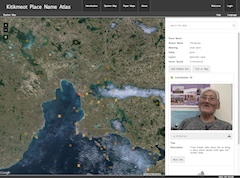

The Geomatics and Cartographic Research Centre (GCRC) is directed by Dr. Fraser Taylor, a Distinguished Research Professor in the department of Geography and Environmental Studies at Carleton University in Ottawa, Canada.
Research and development of Nunaliit is carried out by a team of researchers and developers at the GCRC and, increasingly, by our academic partners listed below. Amos Hayes leads the development efforts. To date, most Nunaliit programming is by Jean-Pierre Fiset from Class-One Technologies.
Nunaliit has received funding and/or development support from:
Nunaliit also depends on a number of other third party open source technologies such as CouchDB, OpenLayers, and Jetty. A full list can be found in the LICENSE.txt file in the distribution.
Please consider including a credit and link to Nunaliit if you use it so that we can grow our community and support. Assets have been developed to help.
Nunaliit Atlas Framework
